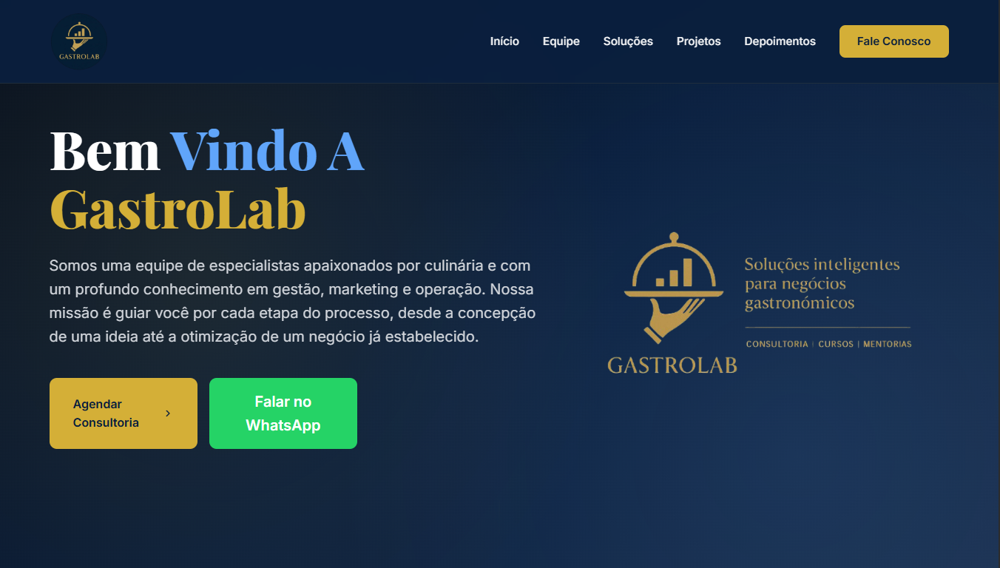

GastroLab

Sobre o Projeto
Site desenvolvido para criar uma presença digital profissional para a consultoria gastronômica GastroLab. O projeto apresenta os serviços da empresa de forma clara, organizada e atrativa, fortalecendo a credibilidade através de um layout moderno, fotos, depoimentos e diferenciais.
O foco principal foi facilitar o contato com potenciais clientes por meio de botões de WhatsApp e seção de contato, aumentando conversões. O site guia o usuário para solicitar consultoria com navegação simples, rápida e responsiva.
Propósito
- Criar presença digital profissional para a consultoria GastroLab
- Apresentar os serviços de forma clara, organizada e atrativa
- Fortalecer a credibilidade com layout moderno, fotos e depoimentos
- Facilitar contato com clientes via WhatsApp e formulário
- Aumentar conversões guiando o usuário para solicitar consultoria
- Mostrar cases, números e experiência da equipe
- Navegação simples e responsiva em qualquer dispositivo
Tecnologias
Como foi feito
HTML5: Estrutura semântica organizada e acessível, pensada para facilitar a navegação e melhorar o SEO do site.
CSS3: Design moderno e profissional que reflete a identidade da marca. Layouts responsivos, animações suaves, gradientes e efeitos visuais que tornam a experiência agradável.
JavaScript: Interatividade com navegação suave, validação de formulários, animações dinâmicas e integração com WhatsApp para facilitar o contato com os clientes.